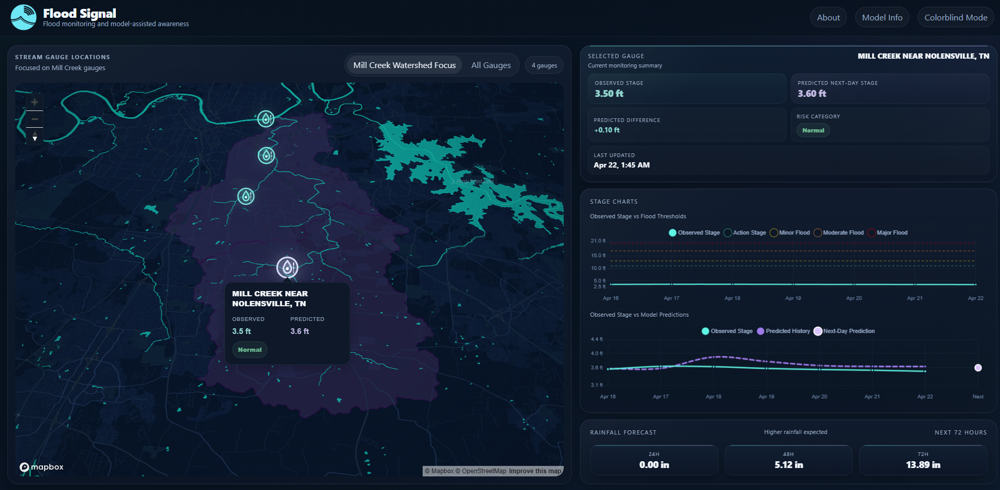
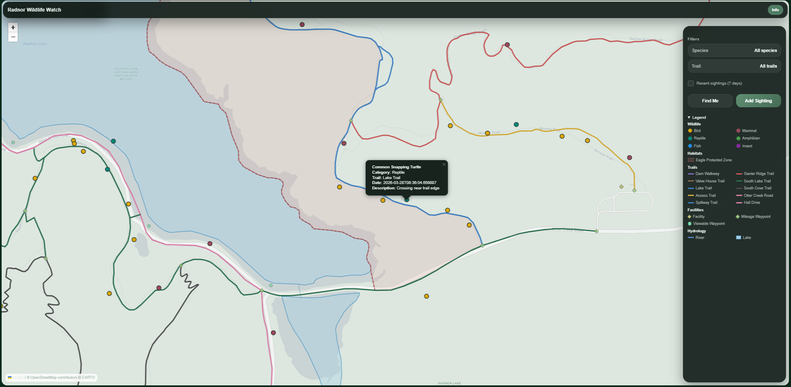

Flood Signal: Flood Monitoring and Model-Assisted Awareness Application
Flood Signal is a flood monitoring and decision-support app built for Mill Creek in Nashville, combining live stream data, rainfall context, and next-day flood stage predictions in a single web application.
See Project
Radnor Lake Park Wildlife Watch Application
A web application designed to track and monitor wildlife activity in Radnor Lake Park, providing real-time data visualization and reporting.
See Project
Cyberwave Inspired Slippy Map
This web map was inspired by cyberwave, retro sci-fi, and the glowing universe of Tron. The style uses neon colors, geometric shapes, and grid patterns to create a map that feels more like a sci-fi world than a real one.
See Project
Self-Guided Nashville Tour
A Nashville-focused StoryMap featuring music landmarks, local stops, and handpicked places that give users a taste of the city.
See Project
Fishing Tracker Dashboard
A dashboard and spatial database project built to analyze fishing records, species information, and environmental conditions.
See Project
Homelessness in Tennessee
A StoryMap examining homelessness trends in Tennessee, shelter access, and the challenges affecting housing stability.
See Project